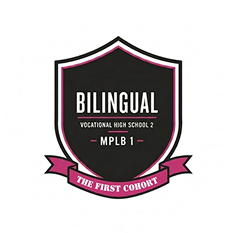
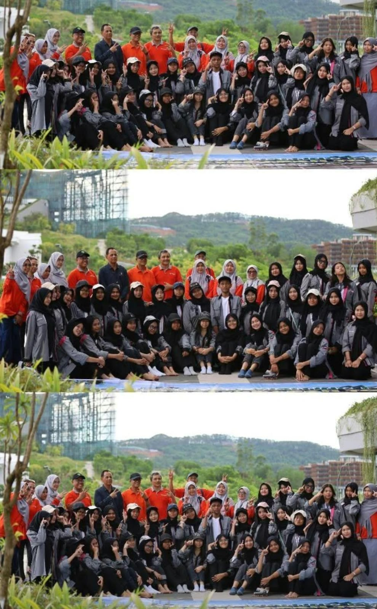
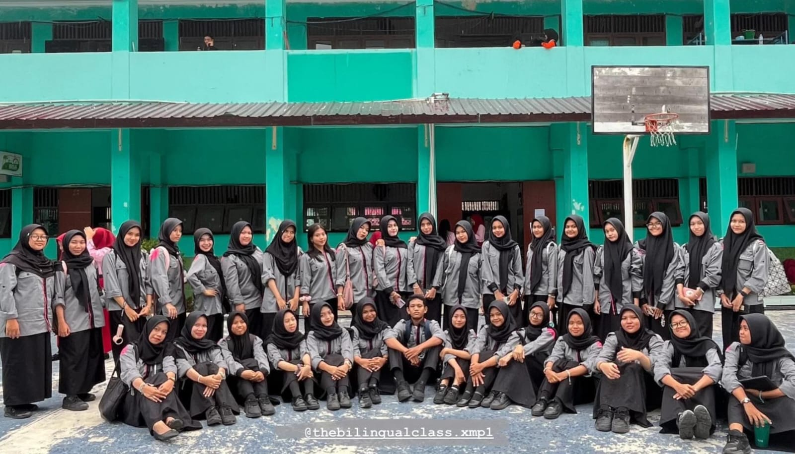
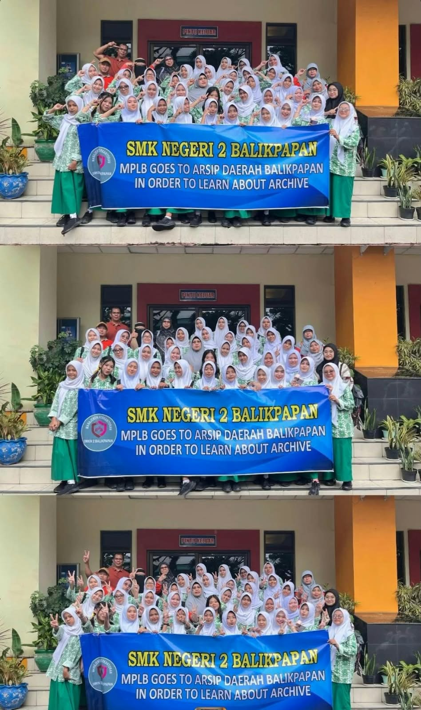

Manajemen Perkantoran
Mencetak tenaga profesional administrasi modern yang teliti, komunikatif, dan berbasis teknologi digital untuk siap bersaing di Dunia Usaha dan Dunia Industri (DUDI).
Deskripsi Singkat Jurusan
Jurusan Manajemen Perkantoran di SMK Negeri 2 Balikpapan (SKADA), dahulu dikenal sebagai Otomatisasi dan Tata Kelola Perkantoran (OTKP), merupakan salah satu jurusan di Sekolah Menengah Kejuruan (SMK) yang memberikan bekal tentang berbagai informasi layanan dalam bidang administrasi secara pengetahuan, keterampilan, dan sikap dalam menyelesaikan pekerjaan-pekerjaan perusahaan atau kantor.
Sejarah & Transformasi
Memulai perjalanannya dari program Sekretaris klasik, jurusan ini bertransformasi menjadi Administrasi Perkantoran, kemudian Otomatisasi dan Tata Kelola Perkantoran (OTKP), hingga kini bernama Manajemen Perkantoran & Layanan Bisnis. Evolusi kurikulum selalu selaras dengan perkembangan zaman, mengintegrasikan paperless office system, aplikasi otomatisasi cloud, dan standar pelayanan prima instansi modern.
Makna Logo Jurusan MP
Mengenal lebih dekat makna dan nilai di balik lambang jurusan.
Bentuk Perisai
Melambangkan ketangguhan, perlindungan, dan kesiapan siswa dalam menghadapi dunia industri.
Warna Merah Marun & Merah Muda
Marun melambangkan profesionalisme, kematangan, dan wibawa. Sedangkan warna merah muda mencerminkan keramahan, pelayanan prima, dan komunikasi yang hangat.
Buku Terbuka & Pena
Mencerminkan inti dari administrasi perkantoran, yaitu sebagai pusat ilmu pengetahuan, literasi, dan kegiatan tulis-menulis (korespondensi).
Teks Melingkar
Menegaskan identitas jurusan yang selalu selaras dengan almamater SMK Negeri 2 Balikpapan.
Guru & Tenaga Pendidik
Tim pengajar kompeten dan berpengalaman di bidang manajemen perkantoran


secara efektif
.png)
Seragam Jurusan Manajemen Perkantoran
Menanamkan kedisiplinan dan penampilan etika bisnis sejak dini

Siswi Hijab

Siswa

Siswi Non-Hijab
Fasilitas Pendukung Unggulan
Laboratorium Komputer & Simulasi Perkantoran
SMK Negeri 2 Balikpapan menyediakan Lab Komputer Kejuruan Modern yang dilengkapi perangkat komputer spesifikasi tinggi dan simulasi peralatan kantor nyata.
Praktik Data Entry & Typing Speed
Siswa melatih kecepatan mengetik 10 jari standar dan pengolahan data spreadsheet di Lab.

Simulasi Front Office & Receptionist
Melatih tata cara menerima tamu VIP, telepon bisnis, dan pelayanan pelanggan dengan ramah dan cekatan.

Kearsipan & Filing Digital
Penyimpanan dokumen fisik dan digital terorganisir menggunakan sistem pengkodean terstruktur.
Office Management
Bilingual Class
Welcome to the MP Bilingual Program at SMKN 2 Balikpapan. Students in this class are required to communicate in English 8/5 while at school, guided directly by international native instructors and English Teaching Assistants (ETA).
8/5 English Enviroment
Students build confidence and fluency by speaking English in all school daily routines, class presentations, and office simulations.
Native ETA Lecturer
Direct learning experience with native speakers from English Teaching Assistant (ETA) programs for international office standards.
Global Career Readiness
Prepared for multinational corporations, foreign investment companies in Balikpapan, and international hospitality industries.
Enhanced Global Communication
Students master professional business communication, correspondence, and public speaking in both Indonesian and a foreign language.
Meaning Of Bilingual Class Logo
A representation of identity, global standards, and the communication spirit of MP Bilingual students.

Protective Shield Shape
Symbolizes protection and the resilience students need to face communication challenges on the international stage.
Book & Pen Symbol
Reflects a strong academic foundation, English-language literacy, and modern administrative skills.
Ribbon & "Bilingual" Text
Affirms this class's identity as a flagship program that uses two languages (Indonesian and English) in everyday activities.
Red Color & Pink Accents
Red symbolizes enthusiasm and the courage to present oneself with confidence. Pink accents represent the warmth of hospitality that meets global standards.
Bilingual Class Key Modules
International Business Correspondence
Drafting professional English emails, formal business proposals, and executive meeting minutes.
Global Front Office & Cross-Culture Hospitality
Handling international guests, multicultural etiquette, and English customer support.
Bilingual Office Management Department Uniform
Instilling discipline and ethical business behavior from an early age

Female Student Hijab

Male Student

Female Student Non-Hijab
Bilingual Class Activities
Program Documentation & Gallery
visual journey of our Bilingual Class activities, from global exposure field trips to practical archival training and daily class moments.
Global Career Readiness: IKN Field Trip
Students of the MP Bilingual Class visited the Ibu Kota Nusantara (IKN) to witness firsthand the development of Indonesia's future government center, aligning classroom theory with real-world international standards.

The MP Bilingual Class
A united and dynamic group of students ready to master professional administration. Through the 8/5 English environment, we build confidence, discipline, and a global mindset for future careers.

Digital Filing & English Archiving
Organizing physical and digital documents using English coding systems and international data management standards during a practical visit to the Balikpapan Regional Archive (Arsip Daerah).